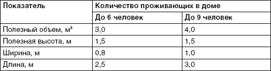
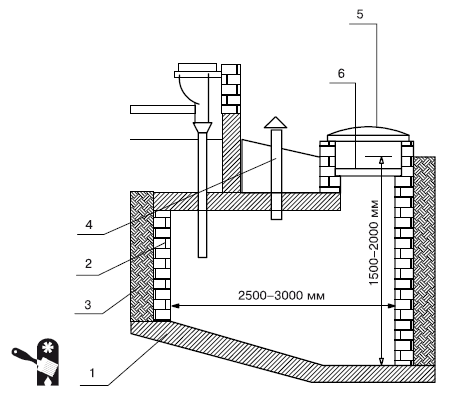
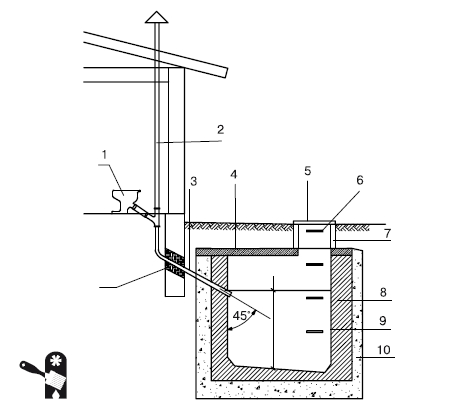
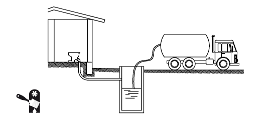
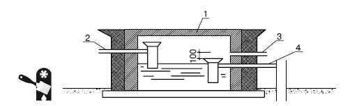
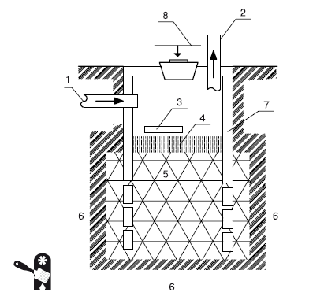
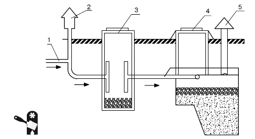
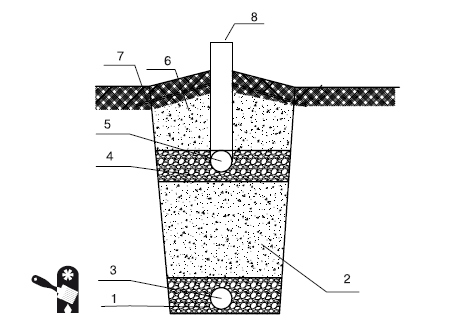
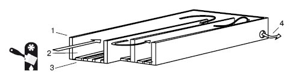

Как обзавестись системой канализации загородного дома.

Нередко, приобретая участок и планируя строительство загородного дома, не обращают внимания на наличие или отсутствие в пределах доступа централизованной канализации. Конечно, сейчас предлагается множество различных вариантов устройства автономной канализации для загородного дома, предполагающих, что все удобства цивилизации, начиная от туалета и заканчивая бассейном, окажутся в доме, а не будут представлять собой кривую будочку во дворе или умывальник дореволюционного образца, в который вода «поступает» из ведра, наполняемого в колодце.
Но, рассчитывая на устройство автономной канализационной системы, следует задуматься: а достаточно ли на участке места, чтобы оборудовать септик необходимого размера? Ведь если участок мал, а семья, проживающая в доме, велика (больше 2–3 человек), то могут возникнуть проблемы – в септик попадает не только содержимое санузлов, но и остальные сточные воды дома, в том числе и кухонные, и из ванных комнат. И если объем септика недостаточен, то может оказаться, что его следует чистить буквально раз в неделю – довольно неприятные условия эксплуатации. Кроме того, септик должен быть удален не только от дома, но и от источника водоснабжения (если на участке устроена независимая система водоснабжения – скважина или колодец), так как не исключается вероятность аварии с протечкой сточных вод в грунт. Следует также предусмотреть устройство полноценной подъездной дорожки к септику – для его обслуживания и очистки используются ассенизационные машины, которые достаточно габаритны. Таким образом, автономная канализация в виде септика требует довольно много места, и при небольших размерах участка может оказаться просто невозможной.
Но и при наличии в поселке централизованной канализации, к которой имеется возможность подключиться от вашего участка, следует учесть ряд факторов, которые могут оказаться весьма существенными, особенно для кармана.
При наличии централизованной канализации рекомендуется обратить внимание на уклон участка, а также на расположение канализационного трубопровода относительно места, выбранного для строительства дома (или относительно уже имеющегося дома, который вы хотите подключить к централизованной канализационной системе). Нежелательно, если трубы централизованной канализационной системы располагаются существенно выше того места, где планируется постройка дома (или он уже построен): при возникновении аварийной ситуации или перегрузке системы (что не слишком большая редкость в сельской местности) все сточные воды из общественной канализации отправятся в ваш дом – в соответствии с принципом сообщающихся сосудов жидкости в таких сосудах стремятся оказаться на одном уровне. Так что самотечную канализацию лучше не устанавливать, а потратиться на канализационную насосную установку, с помощью которой будут отводиться сточные воды. Но случается, что даже такая насосная установка не справляется с принципом сообщающихся сосудов.
К дополнительным расходам при подключении к централизованной канализационной системе может привести и наличие большого участка дорожного покрытия, который необходимо вскрыть для подключения. На подобные работы нужно получить разрешение дорожных служб, а в расходы включать и вскрытие дорожного полотна, и его восстановление, что обходится весьма недешево.
Следует также учитывать стоимость прокладки трубопровода к централизованной канализационной системе: если трубопровод канализационной системы расположен достаточно далеко от дома, то работы и материалы обойдутся в солидную сумму.
Примечание
При прокладке трубопровода внешней канализации его нужно предоставить для контроля водопроводно-канализационной службе до засыпки траншей. Только после подписания акта приемки траншеи могут быть засыпаны.
Так что, даже при наличии в поселке централизованной системы канализации, иногда гораздо рентабельнее организовать автономную канализационную систему.
Подключение к централизованной канализационной системеЕсли вы решили подключиться к централизованной канализационной системе, то для этого необходимо обратиться в организацию, эксплуатирующую данную систему (обычно это производственное управление водопроводно-канализационного хозяйства, и можно получить разрешительную документацию на подключение как к централизованной системе водоснабжения, так и к канализации). Данная организация выдает не только разрешение на подключение, но и условия, на которых оно осуществляется, при этом указывается место возможного подключения и его схема.
Для получения разрешительной документации и технических условий подключения необходимо представить следующие документы:
? заявление на получение технических условий для подключения к централизованной канализационной системе;
? техническое задание на проектирование дома – в том случае, если дом строится (разрешительную документацию на подключение к системам канализации и водоснабжения можно получить до полной готовности проекта дома, но техническое задание, оформленное соответствующим образом проектной организацией, должно быть на руках);
? ситуационный план – схему расположения здания, к которому производится подключение централизованной канализации.
Чтобы составить ситуационный план, необходимо осуществить геодезическую съемку. Подобные работы выполняются организацией или специалистом, имеющими лицензию на проведение данного вида работ. При этом на плане местности должны быть нанесены существующие подземные коммуникации. В случае если прокладка трассы трубопровода канализации планируется в области, где уже имеются какие-либо подземные коммуникации (например, проложен телефонный кабель), потребуется согласование с организациями, которые осуществляют эксплуатацию данных коммуникаций.
Проще всего заказать прокладку внешней системы канализации в разрешающей организации (в той, которая эксплуатирует централизованную канализационную систему). Это вариант самый простой, но не всегда самый дешевый – многие специализированные компании выполняют прокладку и подключение дешевле, причем весьма существенно. Однако, заключая договор на проведение таких работ, следует проверить наличие лицензии, иначе возникнут проблемы при сдаче дома (канализационной системы) в эксплуатацию.
С точки зрения эксплуатации канализационной системы подключение к централизованной канализации является не самым дешевым вариантом, но зато самым удобным. Ведь в этом случае приходится беспокоиться только о внутренней канализации, в то время как при организации автономной канализационной системы владелец загородного дома должен беспокоиться обо всем канализационном комплексе, начиная от бачка унитаза и заканчивая обеззараживанием бытовых отходов.
Выбирая систему канализации, определяясь с ее видом (подключение к централизованной канализационной системе, выгребная яма, биотуалет, поле поглощения, биохимическая система очистки и т. д.), следует знать:
? планируемые объемы бытовых стоков;
? тип грунта на участке;
? сезонное или постоянное проживание планируется в доме;
? удаление дома от водоемов и водозаборов.
Такая информация позволит сделать выбор еще на стадии эскизного проектирования дома и исключить непредвиденные расходы, неизбежные в случае отсутствия планирования.
Устройство автономной канализации загородного домаНе всегда в поселке имеется централизованная канализация – бывает, что подобные изыски цивилизации не дошли в российскую глубинку, а бывает, что поселок является новостроем и устройство централизованной канализационной системы ожидается со дня на день. Но даже если оно вот-вот ожидается, до ее подключения нужно как-то жить. И приходится устраивать автономную канализацию.
Если ваш загородный дом небольшой и предназначен для сезонного проживания 2–3 человек, то можно вообще не подключаться к централизованной канализационной системе – расходы могут оказаться велики, а удобства не столь значимы. Зато можно обустроить автономную канализационную систему в самом простом варианте – выгребную яму.
Многие специалисты утверждают, что выгребная яма – это весьма отсталая система и от нее давно пора отказаться, ведь существуют гораздо более прогрессивные, удобные и безопасные системы автономной канализации, но при этом почему-то не торопятся уйти от использования выгребных ям. Тем более что современная выгребная яма – это не просто яма, заполненная различными дурно пахнущими отходами и наполняющая окружающую среду неаппетитными ароматами, а вполне надежное сооружение, не издающее никаких запахов.
Объем выгребной ямы рассчитывается просто: на одного постоянно проживающего в доме человека следует предусмотреть минимум 0,5 м ямы. Желательно сделать яму «с запасом» (табл. 2.1).
Таблица 2.1. Размеры выгребной ямы в зависимости от количества проживающих человек

Для начала выкапывается котлован нужного размера (обычно выгребную яму устраивают таких размеров: 2,5–3 м длина, 0,8–1 м ширина, 1,5 м глубина). Затем стены котлована изолируются слоем жирной глины (0,25–0,3 м). При этом глина тщательно уплотняется, чтобы исключить появление трещин – эта «прокладка» должна надежно отделять содержимое выгребной ямы от внешней среды.
После устройства глиняного замка стены ямы обкладываются кирпичом (оптимально использовать силикатный кирпич – он является самым водостойким), камнем или бетонируются. Поскольку содержимое выгребной ямы является жидким, да еще и агрессивным, то необходима надежная гидроизоляция. В качестве ее используется слой цементного раствора (им оштукатуриваются стены) и поверх – слой битума (Рис. 2.1).

Рис. 2.1.Устройство выгребной ямы: 1 – бетонное основание; 2 – кирпичные стены; 3 – глиняный замок; 4 – вытяжка; 5 – чугунная крышка; 6 – деревянная крышка
Для снижения расходов на обустройство выгребной ямы можно изготавливать стены из досок (древесины хвойных пород). В этом случае необходимо плотно подгонять доски друг к другу, затем конопатить все щели и покрывать стены двумя слоями битума в качестве гидроизоляции.
Дно ямы должно иметь уклон в сторону люка. Оно обустраивается так же, как и стены: сначала слой жирной глины, затем укладка кирпичей, камня, бетонирование или настилка досок, затем – гидроизоляция.
Возможно также устройство выгребной ямы из бетонных колец (аналогично колодцу). Для выгребной ямы достаточно 2–3 колец диаметром 1,5–2 м. После того как кольца установлены на место, их нужно оштукатурить цементным раствором и покрыть слоем битума для гидроизоляции.
Когда сама яма готова, устраивается перекрытие. Самый простой и дешевый вариант – перекрытие из деревянных щитов с гидроизоляцией из рубероида (щиты просто обиваются им). У такого перекрытия имеется существенный недостаток: оно недолговечно (дерево подвержено гниению, а рубероид в условиях агрессивной среды быстро теряет гидроизолирующие свойства). Сложнее, но гораздо надежнее изготовить перекрытие из железобетона (Рис. 2.2).

Рис. 2.2.Подключение выгребной ямы к внутренней канализации дома: 1 – сантехническое оборудование в доме; 2 – вентиляционная труба; 3 – стояк; 4 – плита перекрытия; 5 – чугунная крышка; 6 – ступеньки; 7 – кирпичная кладка; 8 – кирпичные или бетонные стены; 9 – цементная штукатурка; 10 – глиняный замок
Для последующей очистки выгребной ямы в перекрытии предусматривается люк, обычно размером 70 ? 70 см. Люк должен иметь две крышки: одна располагается над перекрытием, а вторая – на уровне почвы. Перекрытие изолируется слоем жирной глины (0,25–0,3 м) и засыпается грунтом.
Минусом выгребной ямы является необходимость контроля ее заполнения. Когда выгребная яма заполняется, нужно вызывать ассенизационную машину для очистки – следовательно, приходится еще устраивать подъездную дорожку к яме (Рис. 2.3). Если проживание в доме сезонное или наездами, то очистка требуется раз в несколько сезонов. Если в доме даже при сезонном использовании проживает несколько человек, то очищать выгребную яму приходится раз в сезон.

Рис. 2.3.Очистка выгребной ямы
Если дом предназначен для постоянного проживания или семья довольно большая, то одной выгребной ямой не обойтись либо придется очищать ее несколько раз в месяц, да еще и ограничивать использование воды для бытовых нужд (например, отказаться от принятия ванны или душа, заменив эту процедуру легкими обтираниями губкой). В этом случае проблему сточных вод придется решать с помощью индивидуальных очистных сооружений.
Обычно индивидуальные очистные сооружения представляют собой септики фильтрующий колодец( фильтрующие траншеи, поля подземной фильтрации– в зависимости от объема сточных вод, подлежащих очистке) (Рис. 2.4).
Септик – это емкость для отстаивания и первичной очистки сточных вод. Такая емкость может быть изготовлена из полиэтилена, пластика, металла, бетона. Самыми дешевыми являются септики из полиэтилена и пластика. Они имеют еще один плюс: их легко устанавливать (эти септики немного весят). К минусам полиэтиленовых и пластиковых септиков относится небольшой срок эксплуатации – материалы довольно хрупкие и подверженные внешним воздействиям (особенно сильно полиэтилен и пластик разрушаются в морозные зимы – материалы обладают низкой морозоустойчивостью). Так что сэкономленное при приобретении полиэтиленового или пластикового септика приходится доплачивать за счет частой замены.

Рис. 2.4.Однокамерный поверхностный септик: 1 – септик; 2 – ввод стоков в септик из дома; 3 – вентиляция; 4 – вывод осветленных сточных вод в фильтрующий колодец
Металлические септики отличаются прочностью, но они подвержены коррозии, особенно в условиях агрессивной среды сточных вод. Можно использовать септики из нержавеющей стали, но цена на них весьма далека от демократичной.
Оптимальным по соотношению «цена/качество» является бетонный септик. К плюсам бетона относится его устойчивость к неблагоприятным воздействиям внешней среды, бетон не гниет и не ржавеет. Недостатком бетонного септика является сложность установки, но это компенсируется длительным сроком эксплуатации. Единственная проблема бетонного септика – гигроскопичность материала, поэтому требуется устройство надежной гидроизоляции корпуса.
Стандартный септик состоит из трех камер, соединенных друг с другом. Соединение выполняется таким образом, что скорость перемещения стоков между камерами очень мала, и они могут отстаиваться, разделяясь на фракции. При этом твердая фракция выпадает в виде осадка на дно, а газообразная выходит из септика, перемещение продолжает жидкая фракция. К моменту выхода сточных вод из септика практически вся твердая фракция удаляется, а воды осветляются примерно до 65 %. Такое осветление еще недостаточно, чтобы сточные воды можно было сразу сбрасывать в водоем или даже просто в грунт там, где они могут просочиться в систему водоснабжения или даже в сад. Поэтому после септика сточные воды должны отводиться для дальнейшей фильтрации либо в фильтрующие колодцы, либо в фильтрующие канавы, либо на поле поглощения.
Следует помнить, что септики нуждаются в периодическом обслуживании, так как осевшую на дно твердую фракцию необходимо регулярно удалять. Периодичность обслуживания – примерно раз в год (в зависимости от объема септика и объема сточных вод). Выбирая септик, необходимо учитывать суточный объем сточных вод: в соответствии с санитарными нормами анаэробный процесс их брожения (процесс, протекающий при отсутствии кислорода) должен длиться трое суток, поэтому объем септика должен быть как минимум в три раза больше, чем суточный объем сточных вод.
Фильтрующий колодец – простейший и самый малогабаритный вариант подземной фильтрации сточных вод, поступающих из септика (Рис. 2.5, 2.6).
Фильтрующий колодец используется, если объем сточных вод не превышает 1 м . При больших объемах следует использовать фильтрующую траншею или поле поглощения (фильтрующее поле) (Рис. 2.7).
Поле поглощения можно устроить, если грунт на участке песчаный, а грунтовые воды залегают достаточно глубоко – не выше 1,5 м (чтобы не было инфильтрации грунтовых вод сточными водами). Поскольку в России большинство грунтов – глина и суглинок, приходится устраивать искусственный поглощающий слой из песка и щебня.
Недостаток поля поглощения в том, что под него приходится выделять довольно солидный кусок участка. Так, для семьи из 5 человек по существующим нормативам следует выделить минимально 20 м под поле поглощения. При этом над полем поглощения нельзя сажать деревья, располагать какие-либо постройки, подъездные дороги и т. д. Допускается только разбивка клумб. Поэтому, занимаясь планировкой участка, размещением малых архитектурных форм (например, беседок, пергол и т. д.) и хозяйственных построек, следует сразу же предусмотреть, где будет располагаться поле поглощения и каким образом к нему будут подводиться воды из септика.

Рис. 2.5.Устройство фильтрующего колодца: 1 – ввод от септика; 2 – вентиляция; 3 – отражающая плита (используется для предотвращения вымывания ямы в слое песка); 4 – песок (20–30 см); 5 – гравийная подушка (толщина подушки – 0,8–1 м, фракция – 40–60 мм); 6 – грунт; 7 – стены колодца (кирпич, железобетон, железобетонные кольца); 8 – крышка колодца
В принципе, в почве есть бактерии, которые способны очистить любые сточные воды до идеально чистого состояния. Так что теоретически достаточно было бы сливать сточные воды в поле поглощения, прямо в почву. Но на практике процесс очистки сточных вод почвенными бактериями очень долгий, да еще и их активность в холодное время года значительно снижается (почти до полной остановки). Поэтому для повышения эффективности очистки сточных вод используются биоактиваторы– специальные препараты из нетоксичной смеси микроорганизмов и ферментов. Эти биоактиваторы размещаются в септике (достаточно регулярно смывать в унитаз необходимую дозу препарата).

Рис. 2.6.Канализация с септиком и фильтрующим колодцем: 1 – выход сточных вод из дома; 2 – вытяжной стояк; 3 – септик; 4 – фильтрующий колодец; 5 – вентиляционный стояк
Если проживание в доме сезонное, то бактерии, имеющиеся в септике, могут погибнуть при отсутствии эксплуатации септика. В таком случае требуется восстановить популяцию. Минус заключается в том, что во время процесса восстановления пользоваться канализацией нельзя.
Комплекс из обычного септика, биоактиваторов и поля поглощения позволяет очистить сточные воды до 95 %.
Без поля поглощения можно обойтись, если использовать более сложный в устройстве септик, в котором может осуществляться многоступенчатая очистка сточных вод на основе биохимической системы (все те же биоактиваторы). Такие септики (аэротенки)обладают рядом преимуществ: они компактнее обычных септиков, занимают меньше места, не требуют дополнительной фильтрации (ни фильтрующего колодца, ни полей фильтрации) (Рис. 2.8). Современные модели не требуют и ассенизационной машины (осадки можно удалить самостоятельно или пригласить специалиста из обслуживающей компании, но не ассенизационную машину, для которой нужны подъездные дорожки).

Рис. 2.7.Фильтрующая траншея: 1 – нижняя гравийная подушка; 2 – крупнозернистый песок; 3 – нижняя дренажная труба; 4 – верхняя гравийная подушка; 5 – верхняя дренажная труба; 6 – насыпной грунт; 7 – гидроизоляция; 8 – вентиляционный стояк

Рис. 2.8.Схема аэротенка: 1 – активный ил; 2 – очищаемые сточные воды; 3 – подача воздуха; 4 – отвод избытков иловой смеси
Применению аэротенков препятствуют имеющиеся у них недостатки: необходимость ограничивать применение ряда моющих средств, которые могут неблаготворно повлиять на анаэробные бактерии, чувствительность к колебаниям нагрузки (если вдруг резко возрастет нагрузка – увеличится слив, то аэротенк уже не будет обеспечивать должную очистку сточных вод).
Самой большой проблемой аэротенков является возможная гибель анаэробных бактерий из-за отсутствия питания, поэтому их не рекомендуется использовать в домах, предназначенных для сезонного проживания. Или каждый раз придется консервировать аэротенк, а по возвращении – выращивать новую колонию анаэробных бактерий. Причем это выращивание занимает не один день. Хуже всего то, что, если аэротенк уже законсервирован, дом фактически остается без канализации и, если вы желаете приехать «не в сезон» (например, провести на природе несколько осенних или зимних дней), вам придется использовать «дворовые удобства», отказаться от водоснабжения кухни и ванной – от всего, что нуждается в канализации.
Канализация для дачи своими рукамиДля маленького дачного домика, предназначенного для сезонного проживания, возможно использование простейшего устройства для сброса и очистки сточных вод из кухни и душевой (частичная бытовая канализация). Канализация может быть устроена в песчаных или торфяных грунтах и работает за счет почвенных бактерий, очищающих сточные воды.
Для оборудования такой канализации потребуется пластмассовая бочка объемом минимум 200 л. Пластмасса должна быть плотной – легкая тонкостенная бочка не подойдет. Использовать металлическую бочку не стоит: металл подвержен коррозии, а эффективная защита от нее обходится недешево.
Канализация устраивается следующим образом. Бочка разрезается пополам и вкапывается днищем вверх таким образом, чтобы около трети оставалось на поверхности. Канализационная труба вводится в оставшуюся на поверхности треть бочки. Затем верх бочки армируется металлом и заливается бетоном. После того как бетон полностью застывает, бочка засыпается грунтом.
При таком устройстве канализации сточные воды рассасываются в грунте – скорость их сброса не должна превышать скорость рассасывания, что предполагает обязательный контроль расхода воды. Правда, при этом возникает две проблемы: устройство туалета и сброс мыльной воды (или воды с различными порошками, чистящими средствами и т. д. – подобные добавки вредны для растений). Поэтому бочку нужно вкапывать подальше от сада, а туалет устраивать отдельно по древнему принципу «будка во дворе».
У дворовых «туалетных удобств» для дачных участков есть существенный минус: очищать «удобства» приходится вручную. Большинство дачных поселков не обслуживаются ассенизационными машинами, так как объем сточных вод для вывоза минимален и регулярного обслуживания не требует. Можно договориться с водителем такой машины в индивидуальном порядке, но обойдется мероприятие недешево. Вот и остается на долю домовладельца неприятная процедура по организации компостной кучи. Поэтому чаще используется конструкция «дворовых удобств» без ямы для нечистот: под досками устанавливается ведро, которое регулярно опорожняется под ближайший кустик (при редком использовании) или в компостную яму.
Если вы хотите устроить во дворе умывальник (сполоснуть руки, лицо после огородных работ), то можно не только провести к нужному месту воду, но и устроить частичную бытовую канализацию. Для этого под стоком умывальника нужно устроить гравийно-песчаную подушку: выкапывается яма, которая заполняется сначала гравием, а затем засыпается песком, который тщательно трамбуется. Если сделать яму с гравийно-песчаной подушкой побольше, то в нее можно отвести также кухонные стоки и даже стоки из душевой (если душевой пользоваться не слишком часто). Чем больше стоковых вод отводится в такую канализационную систему, тем тщательнее нужно контролировать расход воды, чтобы слишком большое количество стоков, с «рассасыванием» которых не справится яма, не привело к заболачиванию почвы.